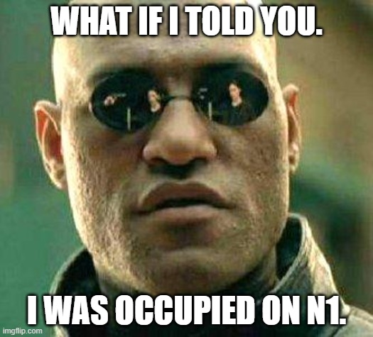

I am heading off to bed
1 Like
It should be easier to find mafia in this environment, then. They can’t metaread anyone.
I think metareads are the easiest reads to make if you are mafia. You are taking prior experience with other players and applying it to the current game in whatever way you desire. As long as you make it sound believable, you look like you are being helpful.
So far, Thomas’ replacement has been the opposite of the previous slot holder. I’m looking forward to this.
While I disagree on Isabel, I might need to take another look at Gilbert. I considered Gilbert’s arguments for Thomas being town quite towny, because he actually looked for an explanation, instead of just taking Thomas’ alignment for granted or ignoring him altogether.
I’m not sure about Susan, but maybe I just missed it. I agree about Lucy, I’m surprised she wasn’t protected. Her town captain attitude day 1 warranted protectives.
I keep reading and I find Thomas 2’ push on Gilbert increasingly convincing, mostly as a result of what Thomas 2 is saying and what they sound like. I still need to re-read Gilbert myself, though.
This is mafia.
Why not just vote there and force Helen to do something?
I’d do it myself, but I’m still catching up.
I heard the same claim before from Geoffrey, and I scumread Geoffrey.
I would like you to do something that requires more effort. Anyone can read lowposters. There isn’t much to read, which means there isn’t much to fabricate and make mistakes in.
Helen, who do you trust? Who are your townreads?
I like the fact Edmond asked this question, because I wanted to do it myself in this exact moment. Strengthening my townread further, and doubting that Edmond has been converted.
The fact he had a very poor explanation for wagoning Geoffrey does give me pause about Geoffrey’s alignment, but I’d rather not preflip either of them until we actually see the flip (s).
I’m still waiting for him to provide more advanced reads.
I would argue he is scummy enough to be killed today, but I suppose we can wait until tomorrow, after the primary mafia reads are resolved.
I had the same thought. It’s genuinely baffling to me how you wouldn’t notice a new player being in the game (with a different nickname) unless you were just faking it.
Andy is most likely just faking it.
I like Isabel’s posts today much more than I liked them yesterday.
There is only two starting cult, so cult could kill alongside convert.
Ah, this is true. Both could be done.
Then if it’s a track, two visits should be seen; the conversion visit, and the attack. If it’s a watch on Lucy, then only the kill would be seen.
It looked like a claimed track.
Then again, talking about this is a waste of time considering Thomas 2’s denial of such an action ever taking place.
Do you think the reasoning I gave is bad? point to where if u do
Things that pinged me while reading
Rolefishing
Picking on inactives. 2 Egregious things, Thomas moves further up the scumlist even after getting replaced.
This just reads “I’m trying my best to pretend that I’m town”
As others have pointed out, not the greatest look.
Alan's readlist:
First thing to note that even though he has all the names listed, only about have of those are populated, even sparsely. He says it was a mistake, but never follows up on it to fill out the ones he missed
Not scummy on its own, probably needed explanation
Yes that was a joke because I am not the best at keeping promises 
I’m
Confused as to what this read on Jane is trying to say
But I read this as “Come on people have town motivation like me,” which again fuels the acting conjecture
And yet no quoted posts.
I think I like this claim!
Only comes from townies who have genuinely not read the thread
TL;DR:
- Late Welcome to Thomas #2 but somehow you seem more scummy than #1
- Peter++
- Alan - -
one more wallpost for tonight incoming
Let me try and prove you otherwise :^)
Opener: slightly performative and tries to start with towncred
Instantly conforming to reads, signs of UTR scum.
Townreads king without proof
As previously noted, this post has a total of 2 weak scumleans, and lots of townreads, even giving some people light townleans even when they haven’t done much.
Tries to act casual, saying that “oh off the top of my head…”, refering to the Assassin 2/1
This, at least to me, reads “I was occupied/jailed so I am not NK/Assassin.”
I see this slot as actively trying to be UTR (wow oxymoron), and they seem to be trying to clear themselves through a little bit of mech. Sure they may have been helpful at times, but how hard would it be to act similarly as scum?
/vote Isabel_Savage
Hosts probably asleep, so not pinging
Good night everyone
Ok you got me I was occupied.

Dude I really don’t care about the reasoning
I can hear everyone saying bruh here.
Ivo’s readlist having people written down as “helpful” is as simplistic a townread as it gets. Which makes it easy to fake. And it’s being used on multiple people.
I’m losing faith in Ivo very quickly. Not like I had much faith in him to begin with.
Well, yes, that is how it works.
Okay then, Prince always kills this slot if the claim is not true.
…I don’t really understand this logic. Why push the person you jailed when you didn’t even stop a nightkill by jailing them? To… help them out you as Prince? I don’t follow.
You said you scumread him. Why did you lie?
well if it’s a valid argument for better move for town then it’s not wolfy at least not for the reason you are giving
I still believe that Geoffrey spent the last minutes of EoD1 trying to pocket Edmond, but I suppose I’m alone in this.
…Okay?
I didn’t like that. But also, Warlock doesn’t even exist, so… it doesn’t matter. Most likely.
Saying that is meaningless.
Who and why?
?
Have you read Thomas 2 before reaching that conclusion? Do you think Thomas 2 has been scummy? If so, why?
Helen has just been floating and not doing much of anything.
It isn’t a good look because wolves do this more often than town
The reasoning behind the action doesn’t really matter here
Which is why I’m voting them now you mention it.
We need to solve these slots which aren’t doing much.
/vote Jane
I’m just going to go here for now, that one post they made just made me literally go 
yea I understand the core read and it works on it’s own but don’t deny it more depth when there is more to it
I am just questioning about that goddamn PoE that you have made because it is…bad.
And I said many others because of the same reason above, just wondering if you have any other people in your PoE.
My read is a surface level read, there is no depth there